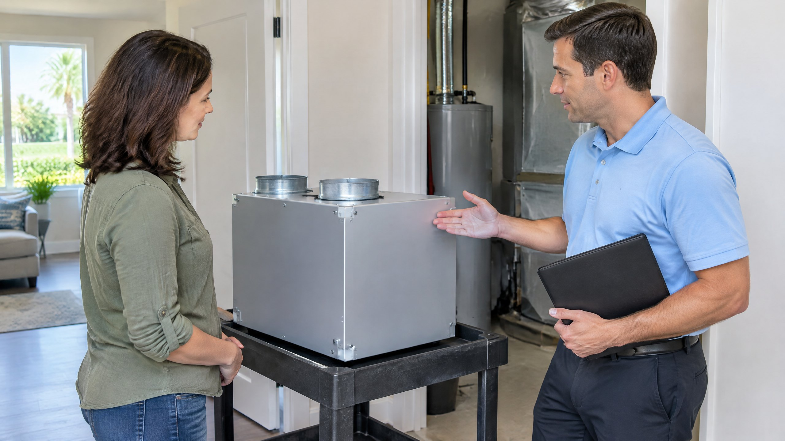

A whole-home dehumidifier is an addition to humidity control, not a replacement for an air conditioner. The choice is whether your home needs moisture removal beyond what its correctly operating cooling equipment provides. That decision should follow an assessment of the building, the existing HVAC system, and indoor conditions—not a recommendation based only on living in Tampa.
This guide compares AC-only moisture removal with supplemental dehumidification. It does not repeat a general list of reasons a home feels humid while the AC runs. It also does not diagnose an active leak. For a proposed installation, see On The Way's whole-home dehumidifier installation information and ask what findings support the recommendation.

In this guide: Cooling versus moisture removal · When to consider an addition · Equipment options · Capacity and integration · Installation scope · Check the result
What AC and a dehumidifier do differently
AC can remove moisture as indoor air passes across a coil cold enough for water vapor to condense. Its work includes reducing air temperature and removing moisture. PNNL calls these the sensible and latent portions of the cooling load. They are related, but they are not the same requirement.[1]
A thermostat's temperature target does not, by itself, show that the desired humidity has been reached. Conventional cooling operation usually stops when its temperature control is satisfied. PNNL explains that lower cooling loads can shorten operating periods and leave proportionally less time for moisture removal, even when the home reaches its temperature target.[1]
A dehumidifier uses a humidity control to request moisture removal without needing the house to become colder first. It is not a second AC: dehumidification slightly warms the air around the unit. ENERGY STAR describes this warming as expected operation, not evidence that the appliance is malfunctioning.[2] Cooling and humidity controls therefore need to be considered together.
When might a Tampa home benefit from supplemental dehumidification?
Consider it when documented humidity remains a concern after water sources, equipment operation, and building leakage have been evaluated. A mild but damp day can create a different balance from a hot day with long cooling runs. PNNL identifies low sensible cooling loads and humid conditions as reasons supplemental equipment may be useful.[1]
That is not an instruction to add a dehumidifier to every Tampa or North Tampa home. The assessment should show whether the concern affects several rooms, mainly one space, or a particular activity. A comfortable temperature with persistent moisture concerns is useful evidence, but cannot tell you the needed capacity or installation arrangement.
Use a humidity meter to record relative humidity, along with room temperature, location, and time. Relative humidity compares water vapor present with the saturation level at that temperature. ENERGY STAR discusses hygrometers and humidity controls; EPA also recommends measuring humidity rather than relying only on how a room feels.[2][3] Record repeated conditions and discuss an appropriate target for the home rather than treating one reading as a universal equipment diagnosis.
If dampness mainly follows showering, first separate local exhaust from the whole-home appliance decision. Our answer to whether to run the bathroom fan while the AC is on explains fan use, outdoor discharge and the observations to report without treating bathroom moisture as a cooling diagnosis.
What should be addressed before buying another appliance?
First distinguish airborne moisture from liquid water entering or leaking inside the building. A dehumidifier does not repair plumbing, roof leaks, or overflowing condensate drainage. EPA emphasizes fixing the water problem, not merely cleaning or drying its visible effects.[3] Active dripping from a register belongs in our separate ceiling-vent water article, with prompt assessment of its source.
Next check whether the existing AC is operating as intended. Changed cooling, repeated cycling, icing, or drainage problems should be reported for an AC repair assessment. A humidity addition should not become a substitute for correcting a known equipment fault. PNNL explicitly says supplemental dehumidification is not intended to compensate for oversized HVAC equipment or excessive building leakage.[1]
Discuss moisture sources and the building enclosure as well. Bathing, cooking, laundry, outdoor-air entry, and ventilation arrangements affect the amount of water vapor equipment must manage. Appropriate exhaust and source control matter, but opening windows is not automatically beneficial when outdoor air is humid. The HVAC and building assessment should establish what needs correction and what moisture load remains afterward.[1][2]
Compare AC controls, portable units, and ducted equipment
AC with compatible humidity controls: Some systems offer a dehumidification mode that changes cooling operation, including supported airflow settings. PNNL describes this approach as one option, while noting that it still cools the home and can affect comfort during mild conditions.[1] Have the contractor verify the installed equipment and approved control strategy; do not change blower settings yourself to imitate a feature.
Portable room dehumidifier: This can address a defined room or space without being connected to the central ducts. It may use a collection bucket or an approved drainage arrangement. ENERGY STAR distinguishes portable room models from permanently installed whole-home equipment.[2] Removing water in one location does not prove that the rest of the home is being controlled equally.
Independent ducted dehumidifier: This has its own air-distribution ducts rather than relying on the existing central HVAC ducts. PNNL describes the arrangement as an option when a separate distribution system is appropriate, including homes without central ductwork.[1] It still needs a designed air path, humidity control, drainage, and accessible service location.
Centrally integrated ducted dehumidifier: This connects with the home's central air-distribution arrangement. The return and supply connections, fan coordination, and control sequence depend on the design and manufacturer's instructions. PNNL presents several configurations, not one connection pattern suitable for every system.[1] Ask for the proposed air path rather than assuming any cabinet labeled whole-home can be added anywhere.
Does a dehumidifier also supply fresh air or filter pollutants?
Not automatically. Some designed systems combine an outdoor-air intake with dehumidification; others recirculate indoor air. PNNL shows the outdoor-air arrangement as a specific configuration.[1] Our central AC and fresh-air explanation covers why cooling equipment alone does not establish ventilation.
Ask whether the proposal includes outdoor-air ventilation, how that air is controlled, and whether its moisture contribution is included in selection. A filter inside a dehumidifier also does not make moisture removal equivalent to a general filtration upgrade. Use our separate AC filter selection guide for fit and airflow compatibility. Keep the goals clear: controlling moisture, moving outdoor air, and capturing particles are different tasks.
How should capacity and compatibility be selected?
Rated capacity commonly expresses water removal in pints per day, but the number is not a promise for every room temperature and humidity condition. ENERGY STAR says capacity needs depend on both the space and its conditions. PNNL also emphasizes performance at relevant design conditions.[2][1] A portable sizing chart is not a whole-home installation design.
Ask what moisture-load information supports the selected model and what performance data were used. The assessment should consider the building, outdoor-air entry, activities, and the AC's contribution. Existing system sizing matters too; our Manual J sizing guide addresses that separate cooling-equipment question. Do not choose a whole-home unit solely from floor area or a larger-number-is-better rule.
For a ducted addition, confirm the available installation space, intended air distribution, equipment airflow requirements, and interaction with existing ductwork. A contractor may need to inspect or test ducts before recommending changes. If identified leakage needs correction, ask about the specific duct sealing scope rather than assuming a larger dehumidifier can overcome it.
What are the heat and electricity tradeoffs?
A dehumidifier consumes electricity and adds some warmth while removing moisture. The AC may then have additional cooling work, depending on conditions and how the equipment is integrated. PNNL describes this interaction for ducted systems.[1] Better humidity control is a possible comfort benefit, not proof that total electricity use will fall.
ENERGY STAR uses Integrated Energy Factor, or IEF, to describe liters of water removed per kilowatt-hour of energy consumed. A higher factor generally indicates better dehumidifier efficiency.[2] Compare suitable equipment and its operating conditions; IEF is not a prediction of your entire HVAC bill or a guarantee of equal runtime.
Ask the provider to explain installation cost drivers, control behavior, and maintenance needs separately from any estimated operating costs. There is no universal price or savings percentage in this guide. Changing the thermostat because the home feels drier is a household choice, not a promised reduction in energy use.
What should the installation proposal explain?
The written scope should identify what equipment is being added, where it goes, which air path it uses, how water leaves it, and how its operation is controlled. PNNL calls for equipment and installation details in plans and scopes of work.[1] A model number without those installation details leaves important questions unanswered.
On a phone, scroll the table sideways to read both columns.
| Ask about | The proposal should clarify |
|---|---|
| Equipment and selection | Model, capacity basis, performance conditions, and why it fits the remaining moisture need |
| Air distribution | Independent or integrated ducts, connections, airflow, and central-fan coordination |
| Water removal | Drain route, any pump, access, and manufacturer-required provisions |
| Controls | Sensor location, operating target, and response with and without an AC cooling call |
| Service and verification | Filter and drain access, required care, operating checks, and a follow-up plan |
ENERGY STAR notes that whole-home units normally use a drain installed by an HVAC professional.[2] The drain and service access are part of the project, not incidental details. Do not accept a proposed cabinet location that leaves basic inspection or maintenance inaccessible.
What maintenance will the addition need?
Follow the selected equipment's maintenance instructions rather than applying one schedule to every model. Ask how to inspect its filter, keep the intended air path clear, and recognize a drainage or control problem. Obtain the model and installation records so future service can identify the actual arrangement.
Discuss the addition during ongoing AC maintenance, while confirming whether dehumidifier-specific care is included in the agreed scope. A general maintenance visit should not be assumed to cover every additional appliance. Report stopped drainage, changed sound, persistent humidity, or an operating warning rather than bypassing a control or allowing water to collect.
How can you tell whether the recommendation worked?
Agree on a verification plan before installation. That should include checks of the air path, controls, and drainage, followed by observations of indoor humidity under relevant conditions. A demonstration that the fan runs is not the same as showing that the intended rooms receive the required moisture control.
Keep the same basic record used before the change: location, humidity, temperature, time, and relevant household activities. Ask how the sensor location represents the living spaces and what operation to expect when the AC is not calling for cooling. ENERGY STAR describes humidity-based cycling; PNNL discusses controls located in living space and coordination with the central fan.[2][1]
If conditions remain unsatisfactory, return to the documented findings and installation rather than immediately lowering the target or buying another unit. The useful outcome is a defined moisture-control strategy with demonstrated operation and known limits. It is not a promise that a dehumidifier eliminates leaks, odors, every pollutant, or future moisture problems.
Frequently Asked Questions
Does every Tampa home need a whole-home dehumidifier?
No. Consider one when documented humidity needs remain after water sources, equipment operation, and building leakage are evaluated. Living in a humid climate alone does not establish the needed equipment or capacity.
Can a whole-home dehumidifier replace my AC?
No. It removes moisture without serving as the home's cooling system and slightly warms the air. AC and dehumidification have different roles and should be coordinated for the installation.
Will a dehumidifier fix a roof leak or clogged AC drain?
No. It does not repair a liquid-water source. Identify and correct leaks, drainage faults, or other moisture problems before treating a dehumidifier as the solution.
Is a portable dehumidifier the same as a whole-home system?
No. A portable model typically addresses a room or space. Whole-home equipment uses a designed distribution arrangement. The choice depends on the affected spaces, moisture need, drainage, and installation requirements.
Will adding a dehumidifier lower my cooling bill?
Not necessarily. It consumes electricity and adds some warmth, and its interaction with AC depends on conditions and controls. Product efficiency is useful to compare, but does not guarantee lower total HVAC electricity use.
Sources
- PNNL Building America Solution Center: Whole-House Dehumidification — cooling and moisture loads, equipment arrangements, sizing, controls, integration, and retrofit limitations. Foundational guidance, not a current local code determination.
- ENERGY STAR: Dehumidifiers — portable versus whole-home equipment, capacity conditions, drainage, IEF, humidity controls, and operating considerations.
- EPA: A Brief Guide to Mold, Moisture and Your Home — moisture measurement, source correction, condensation, and prompt response to water problems.
Editorial Source Review & Publisher
Published by On The Way Heating & Air for Tampa and North Tampa homeowners, using the federal and national-laboratory references above. This guide is a general equipment-selection framework, not a diagnosis, product approval, installation specification, or savings guarantee. Dustin Miller began HVAC work with his father in 2006; that family-rooted background is company context, not a claim that a particular home has been inspected.